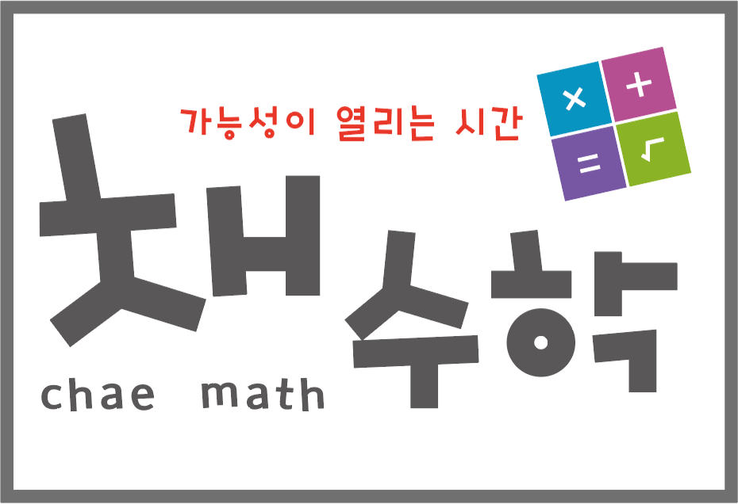

채수학 시험지 5종 세트 — 프롬프트와 작성 요령
다음부터 이 PDF 한 장과 시험지 원본만 올리고 아래 프롬프트를 붙여 넣으면 됩니다.
① 이렇게 쓰세요 (복사해서 붙여 넣기)
첨부한 「5종 세트 지침」 PDF대로 시험지 5종 세트를 만들어 줘.
시험: ____년 ____학교 ____학년 ____학기 (중간/기말) (과목: ______)
원본: 첨부 파일 (시험지 / 정답·해설 / 분석표)
- 지침의 서식·이름·저장 위치를 그대로 지키고, 정답은 직접 풀어서 확인해 줘.
- 원본 정답이 틀린 것 같으면 고치지 말고 먼저 메모로 알려 줘.
- 사용량 ___%가 되면 큰 작업은 멈추고 거기까지 저장해 줘.
- 다 되면 기출방(앱 방)과 구글(구글방)에 정리해서 넣어 줘. (공동구매 자료면 구글에만)
② 5종 세트 — 한 시험 = 한 폴더, 파일 5개
| 파일 이름 | 모양 (원장님 확정) |
|---|
| <제목> (시험지 B4).pdf | B4 2단. 첫 장 위 제목 칸: 왼쪽 채수학 로고 · 가운데 큰 제목 "2026 ○○중 3학년 2학기 기말시험" · 오른쪽 날짜/이름/점수 칸. |
| <제목> (B4 한글시험지).hwpx | 「채수학 B4 시험지 틀」(원장님 한글 틀) 그대로. 로고·제목·날짜/이름/점수·꼬리말. 도구 검사 검사: OK 필수. |
| <제목> (분석표).pdf | A4 1쪽. 문항별 유형·단원·핵심 개념·난이도·배점·정답, 단원별/난이도별 배점. |
| <제목> (손풀이).pdf | A4, 2단, 한 쪽에 2~4문제. 문제마다 정답 표시 + 손글씨 풀이. |
| <제목> (적중리포트).pdf | 채수학 개념서와 비교(일치 = 같은 문제·숫자만 다름 / 유사 = 같은 유형·풀이). 지금 모양 그대로. |
모든 파일 공통: 채수학 로고 넣기 · 맨 아래 꼬리말 "수학하는 방법을 가르칩니다!!! 채수학교습소 010-8677-2263" · 유형 칸에 "채수학 X" 붙이지 않기(유형 이름만).
제목 예: 2026 강북중 3학년 2학기 기말 / 고등은 과목 붙이기: 2026 강동고 2학년 1학기 중간 (대수) · 견본: 2026 강북중 3학년 2학기 기말
③ 작성 요령
- 원본 읽기 — 시험지·정답·분석표를 받는다. 큰 파일(10MB↑)은 구글방이 나눠서 레포에 올린다.
- 문제 옮기기 — 문제·보기·그림을 빠짐없이. 그림은 깨끗하게 자르고, 학생 필기가 있으면 새로 그린다. 보기가 B4 한 줄에 안 들어가면 뜻은 그대로 줄이고 원문은 메모에.
- 정답 확인 — 모든 문제를 직접 풀어 원본 정답과 맞춘다. 어려운 경우의 수·확률은 컴퓨터로 전부 세어 본다.
- 틀린 정답·오타 — 확실할 때만 고치고, 반드시 메모(확인 목록)에 남겨 원장님께 알린다. 애매하면 원본 정답 유지.
- 배점 — 인쇄된 배점 그대로. 문제가 빠져 100점이 안 되면 그대로 두고 메모. 배점이 없으면 100점에 맞춰 나누고 "추정" 표시.
- 난이도 — 하/중하→1, 중→2, 중상→3, 상/최상→4 (쉬움1·2 / 보통3·4 / 어려움5·6 / 매우어려움7·8도 같은 순서).
- 단원 — 분석표의 단원 이름을 따른다. 문제별 단원이 없으면 문제를 보고 정하고, 단원별 문항 수를 분석표와 맞춘다.
- 적중 — 채수학 개념서(39권)에서 같은 학년·과목 책으로 찾는다. 정말 같은 유형만 넣고 억지로 넣지 않는다.
- 점검 — 분석표 1쪽 · 한글판 검사: OK · 수식·그림이 제대로 보이는지 몇 쪽 눈으로 확인.
- 저장 — 레포 ilovesos1234-prog/- (작업 브랜치), 폴더 2026-1학기 중간/학교_학년[_과목]/. 자주 커밋하고, 진행 상황을 커밋 메시지에 남긴다.
④ 올리기와 원장님 지시
- 기출방: 채수학 앱 방(깃허브2)에 커밋 번호를 알리면 그 방이 붙인다. 기출방·index.json은 직접 건드리지 않는다.
- 구글 드라이브: 구글방에 알리면 학교시험 폴더(학기/학교별)에 정리해서 올린다.
- 학군지 공동구매 자료("2차 공유 금지"): 기출방 X → 구글 학교시험\자료\학군지_공동구매_4종\ 에만.
- 2025년 시험지: 지시가 있을 때만. · 사용량 한도(원장님이 정한 %): 닿으면 큰 작업 멈추고 거기까지 저장.
- 도구와 자세한 규칙: 레포의 CLAUDE.md, _시험지3종_만들기/tools/BRIEF.md (build.js · school_build.py · blog_report.js · make_b4_hwpx.py).